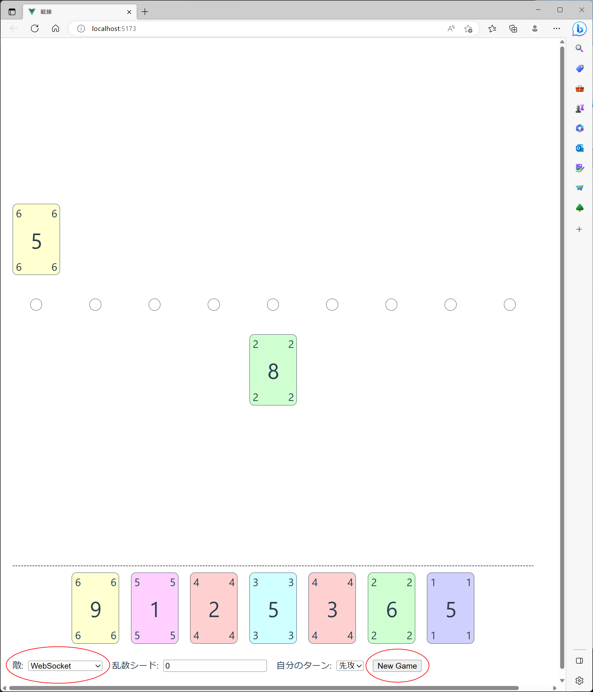

課題とコンクールの進め方
放課後さいころ倶楽部の3巻で紹介されたボードゲームと似ているルールのゲームをプレイするAIを作成してください。このゲームを対人でプレイしたい場合は、日本語版がしかもリニューアルされて持ち運びが便利になったバトルラインを購入してみてください。
ルール
このゲームは2人で対戦します。互いの中央には、9つのフラッグが並んでいます。このゲームでは、色が6色、数字が1〜10の60枚のカードを使用します。
ゲームの開始時にカードが7枚配られますので、その中から1枚選んでフラッグの前においてください。カードを置いた後、山札が残っていれば、山札からカードを1枚補充します。これでターンは終了。相手プレイヤーのターンになり、相手プレイヤーが手札からカードを1枚フラッグの前において、山札からカードを1枚補充します。
フラッグの前にカードが3枚揃うと、役の成立です。役は「ストレート・フラッシュ」と「スリーカード」、「フラッシュ」、「ストレート」、「ブタ」の5種で、役の強さはこの順序の通りです（「ストレート・フラッシュ」が最も強く、「ブタ」が最も弱い）。
より強い役を成立させたプレイヤーがフラッグを獲得できます。役が同じ場合はカードの数字の合計値が大きい方、それも同じ場合は役を先に作ったプレイヤーがフラッグを獲得します。また、自分のターンの終了時に、自分の役が成立しているフラッグは、相手の役が未成立であっても、相手がフラッグを獲得できないことを場札から証明できれば（システムが自動で判断して）獲得となります。
このフラッグを、合計で5つ、もしくは、連続した3つを先に獲得したプレイヤーの勝ちです。
課題確認で実際にプレイしていただくと、ルールを理解しやすいと思います。ぜひプレイしてみてください。
作成していただくプログラムの仕様
プログラムは、手札や場の状態を標準入力から受信し、どのような行動をするかを標準出力に送信してください。フォーマットはJSONで、1つのデータを1行で表現します。
通信には、ゲーム開始時、ターンが回ってきたとき（カードを出せない場に時は、ターンが飛ばされます）、ゲーム終了時の3種類があります。
ゲーム開始時
入力として{"command":"initialize"}が渡ってきます。プログラムの初期化処理が完了したら、JSON形式のデータを何か（"OK"等）出力してください。
ターンが回ってきたとき
入力として、以下のUMLで表現する情報がJSONで渡ってきます。
出力は、以下のUMLで表現する情報をJSON形式で出力してください。
ゲーム終了時
入力として{"command":"finalize"}が渡ってきます。プログラムの終了処理が完了したら、JSON形式のデータを何か（"OK"等）出力してください。
注意点
- 乱数シードが同じであれば同じカードが配られることを利用するアルゴリズム（最初に配られたカードから乱数シードを推測したり、試合では乱数シードが固定されることを利用して敵の手札や山札を予測する等）は禁止です。乱数シードを固定せずに試合した際に大きく勝率が変化する場合には、事務局にアルゴリズムの説明をしていただきます。なお、カウンティングや確率での残りカード予測は問題ありません。
- 有償のライブラリやプログラミング言語は使用しないでください。
- 不正なJSONを送付したときは、そのゲームは負けとなります。
- ターンが回ってきたときにルールで許されていない手を出力したときは、そのゲームは負けとなります。
- 対戦環境は、OSがWindows 11 Professional 64bit、CPUがIntel Core i7-1165G7、メモリが32GBで、ネットワークからは遮断されています。自分のプログラムに加えて敵のプログラムも実行しますので、CPUやメモリを使用しすぎないようにしてください。
- ゲーム開始時とゲーム終了時の処理は概ね30秒以内、ターンが回ってきた時の処理は概ね10秒以内に完了させてください。
- ログ出力は、標準エラー出力を使用してください。標準出力は試合環境との通信で使用するためです。
- プログラムを作成する際は、サンプルや課題確認（ソース・コード）のsrc/cli/adapter.jsとsrc/players/operation*.jsを参考にしてみてください。
対戦環境
対戦環境は、課題確認（ソース・コード）で提供しています。使用したプログラミング言語はJavaScriptで、node.js上で動作します。
node.jsをインストール（18.16.0
LTSで動作検証しています）し、課題確認（ソース・コード）を適当なフォルダに展開し、コマンドプロンプト上でそのフォルダに移動し、npm installしてください。
コマンドライン上でのAI同士の対戦
AI同士を対戦させる場合は、コマンドプロンプトでnpm --silent run play "先攻プレイヤーを起動するコマンド" "後攻プレイヤーを起動するコマンド" 乱数シードを実行してください。乱数シードを0にした場合は、対戦環境がランダムにシードを選択します。
ゲームの途中経過やAIのログは標準エラー出力に、ゲームの結果は標準出力に出力されます。標準出力に出力されるゲームの結果は、先攻が勝った場合は「0」、後攻が勝った場合は「1」です。
Webブラウザ上でのAIと人の対戦
作成したAIとWebブラウザ上で対戦することもできます。準備として、コマンドプロンプトを2つ開いて、1つ目のコマンドプロンプトでnpm run devし、2つ目のコマンドプロンプトでnpm run webSocke "AIを起動するコマンド"を実行してください。
以上を実行したら、npm run devしたコマンドプロンプトに表示されたURLをWebブラウザで開き、[敵]セレクトボックスを「WebSocket」に設定し、[New
Game]ボタンをクリックしてください。

コンクールの進行
練習試合と公式試合を、それぞれ1回実施します。
練習試合の形式は、乱数シードを固定しての、先攻と後攻を入れ替えての2対戦を単位にした総当り戦です。これを72時間で繰り返せるだけ繰り返して、勝利数で順位をつけます。
練習試合は提出形式やプログラムの動作を参加者が確認するために実施するもので、選考には影響しません。練習試合の結果は、実行時間と順位をプログラムの作成者にのみ公開します。また、参考のために、1位の先攻/後攻での勝率を参加者全員に公開します。
公式試合では、予選として練習試合と同形式の試合を実施し、上位4名を決定します。この4名で決勝として総当たり戦を24時間実施し、順位を決定します。決勝で同着が発生した場合は直接対戦での勝利数が多い方、勝利数が同じ場合は追加で先攻と後攻を入れ替えての対戦を実施して勝利数が多い方を、それも同じ場合は、処理時間が短かった方を上位とします。
コミュニケーション
プログラミング・コンクールの目的は「NULグループにおける開発力の向上および、参加者どうしの相互啓発を図る」です。
課題のポイントを理解し、ポイントに沿う形で自身の作品の優秀さを主張してください。プログラミング・コンクールに参加する人と作品に敬意を払い、理解しあい、互いの優秀なスキルを共有してください。
参加者全員が「相互啓発を図る」ために、課題についての質問や意見は参加者全員で対応することとします。参加者は以下の事項を守ってください。
- 課題についての質問は、後述するTeamsに投稿/回答してください。
- 質問や回答に意見のある場合も、Teamsを使用してください。個人宛ての質問や意見は不可とします。
Teams
コミュニケーション媒体としてTeamsに「プロコン参加者サイト」チームを用意しますので、ご活用ください。「◯◯技術についてオブザーバーが解説しろ」とかの投稿も大歓迎です。ただ、オブザーバーの能力不足で解説できない場合は、申し訳ありません、相互啓発ということで参加者の皆様のご協力をお願いするかもしれません……。
- 事務局が、参加者とオブザーバーをメンバー登録します。メンバーは、課題1と課題2のどちらのチャンネルにも参加することができます。
- 各課題の質問や連絡は各課題のチャンネルに投稿してください。
- 投稿するとき、「@」を付けてメンションするとメンバーに通知することができます。「@q1」は課題1のメンバー全員に、「@q2」は課題2のメンバー全員にメンションが届きます。
- 過去の投稿は遡って確認できます。途中から参加した方は、過去の投稿も確認するようにしてください。